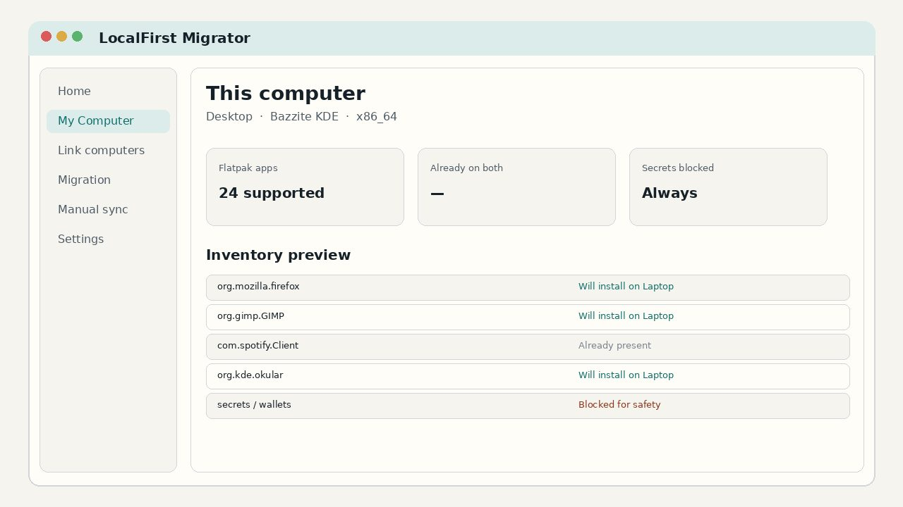
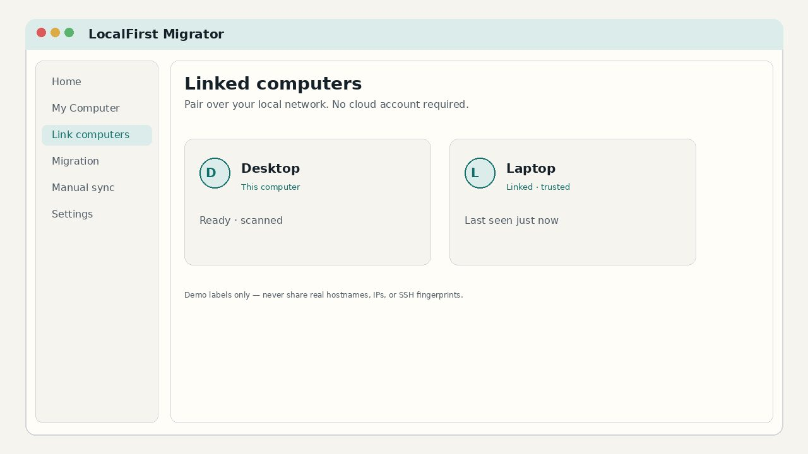
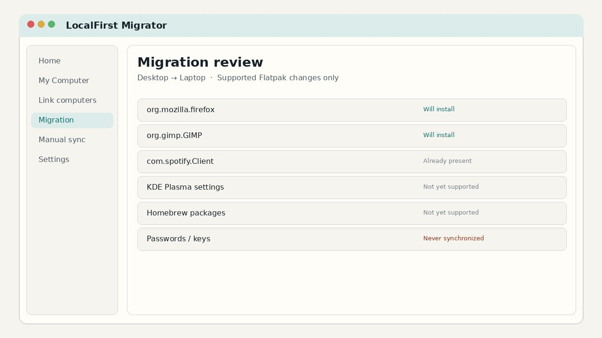
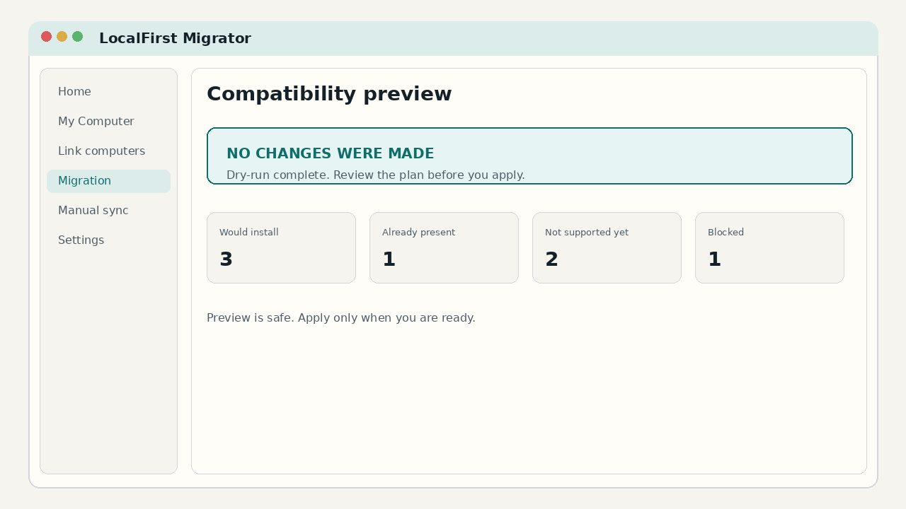
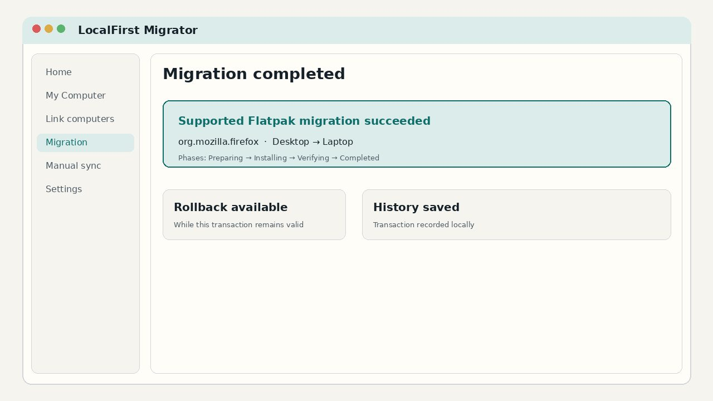
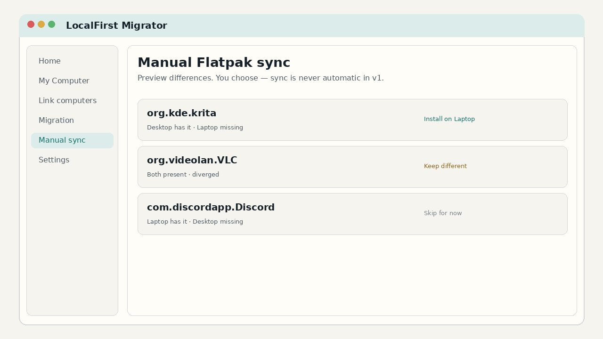

Version 1.0.0 · Bazzite KDE · x86_64
LocalFirst Migrator
Move your supported Flatpak setup between Bazzite PCs. Preview before making changes. Rollback supported. No cloud account. No telemetry. $29 once.
- Preview before changes
- Rollback for supported Flatpaks
- No cloud account
- No telemetry by default
- $29 one-time
$29 founder price · household personal-use license · planned standard $39
Secure checkout by Stripe. Download unlocks after payment. Refund policy.
Independent software for migration and profile management on Bazzite. Not affiliated with or endorsed by Bazzite, Universal Blue, or Fedora.
Why this exists
Moving to a new Bazzite PC usually means rebuilding Flatpaks by hand — or copying a home directory and hoping applications match.
What people do today
- Reinstall every Flatpak from memory or a saved
flatpak list - Shell loops: export refs/remotes, then
flatpak installone by one - Copy selected
~/.var/appfolders or entire home trees with rsync - Clone a whole disk when they only needed their apps on a fresh install
What LocalFirst Migrator does instead
- Inventories supported Flatpaks on both machines
- Shows a reviewable plan before anything changes
- Applies supported Flatpak installs through a transactional path
- Lets you roll back while the transaction remains valid
It does not migrate an entire Linux installation, KDE settings, Homebrew, Distrobox, or secrets. Open-source guides and tools remain valid alternatives for broader jobs.
Guides: Bazzite-to-Bazzite migration · Flatpak migration workflow
How it works
Scan → link → review → preview → apply → verify. Manual Flatpak sync when you want alignment on purpose.
-
Scan
Inventory this computer’s supported applications and related state.
-
Link
Pair another Bazzite computer locally. No cloud account required.
-
Compare
Review what can move, what stays local, and what is blocked for safety.
-
Preview
Run a dry-run that makes zero changes so you can see the plan first.
-
Migrate
Install supported Flatpak applications through a transactional path.
-
Verify / roll back
Confirm the result. Roll back supported Flatpak migrations when still valid.
See the workflow
Sanitized demo labels (Desktop / Laptop). Illustrative UI of the qualified 1.0 workflow — not a live capture of a private machine.






Supported features
Commercial v1 is Flatpak-focused and intentionally honest about scope.
| Capability | Status |
|---|---|
| Flatpak migration | Supported |
| Flatpak rollback | Supported |
| Manual Flatpak sync | Supported |
| Migration preview / dry-run | Supported |
| Local-first operation | Supported |
| Secret blocking | Supported |
| KDE settings migration | Not yet supported |
| Homebrew migration | Not yet supported |
| Distrobox migration | Not yet supported |
| Automatic background sync | Not enabled |
| Secret synchronization | Never supported |
Trust and security
Claims match qualified 1.0 behavior — not marketing absolutes.
Core operation runs on your machines. No cloud account required for migration.
Product telemetry stays off unless you deliberately enable diagnostics you control.
Payment is handled by Stripe. The paid binary is not publicly hosted.
Dry-run shows the plan with zero changes before supported Flatpak operations.
Supported Flatpak migrations can be rolled back while the transaction remains valid.
Passwords, keys, and wallets are blocked. This is not a complete system backup.
Privacy · Terms · We do not claim “unhackable” or “zero risk.”
Safety and rollback
Every supported Flatpak migration is transactional. You get verification and rollback for supported operations.
- Dry-run makes zero changes
- Supported Flatpak installs can be verified
- Rollback remains available while the transaction is still valid
- Machine-specific state stays separate
Install expectations
After purchase you download a tar.gz, verify SHA-256, extract, and run ./install.sh as a normal user. Launch from the application menu.
- Platform: Bazzite KDE, x86_64
- No developer tooling required
- No root install required for the packaged path
- Support if install or linking fails
What v1 does not support
These are not hidden. They are not v1 promises.
- KDE settings write migration
- Homebrew migration
- Distrobox recreation writes
- Automatic background synchronization
- Secret / password / key synchronization
- Windows disk erase or dual-boot automation
- Cloud backup or complete Linux installation clone
FAQ
Does it require a cloud account?
No.
Does it send telemetry?
Not by default.
Does it copy passwords?
No. Secrets are never migrated or synchronized.
Can it migrate KDE settings, Homebrew, or Distrobox?
Not yet. They may appear in planning as “not supported yet,” but writes are blocked in v1.
Does it automatically sync computers?
No. Manual Flatpak sync only. Background sync is not enabled.
Can I roll back?
Yes, for supported Flatpak migrations while the transaction remains valid.
Does it erase Windows?
No. It does not perform disk wipe or Windows conversion.
What if I need a refund?
See the refund policy. Do not post Stripe payment identifiers in public GitHub issues.
Is it an official Bazzite application?
No. Independent software. Not affiliated with or endorsed by Bazzite, Universal Blue, or Fedora.
Pricing
Priced for what v1 actually does: Flatpak migration, rollback, and manual Flatpak sync.
Founder launch
$29 $39
One-time purchase for household personal use. Major-version upgrades may be separate later.
One-time purchase. Secure checkout is hosted by Stripe. Refunds.
Includes
- Scan, link, compare, and dry-run
- Supported Flatpak migration
- Flatpak rollback / transaction history
- Manual Flatpak sync
- Packaged installer — no developer tooling required
Support
Best-effort help for install, linking, Flatpak migrate/rollback/sync, and interpreting dry-run results on Bazzite KDE x86_64.
Qualified product
Version 1.0.0 is based on a physically qualified Flatpak-only commercial candidate: peer link, dry-run, Flatpak migrate/verify/rollback, and manual sync behavior.